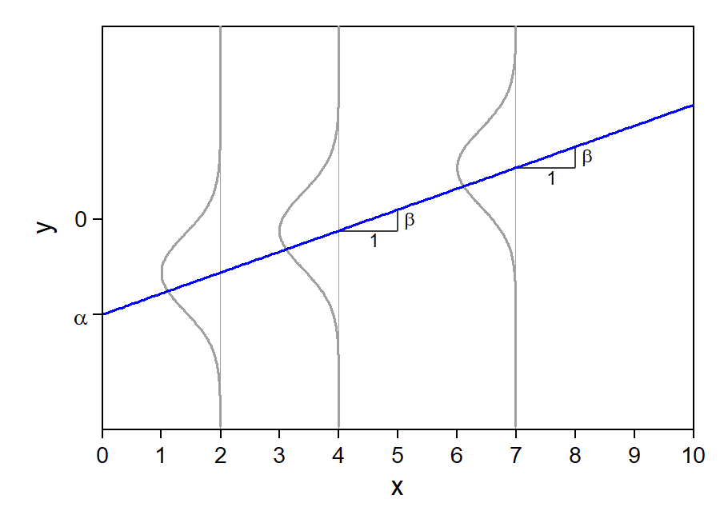
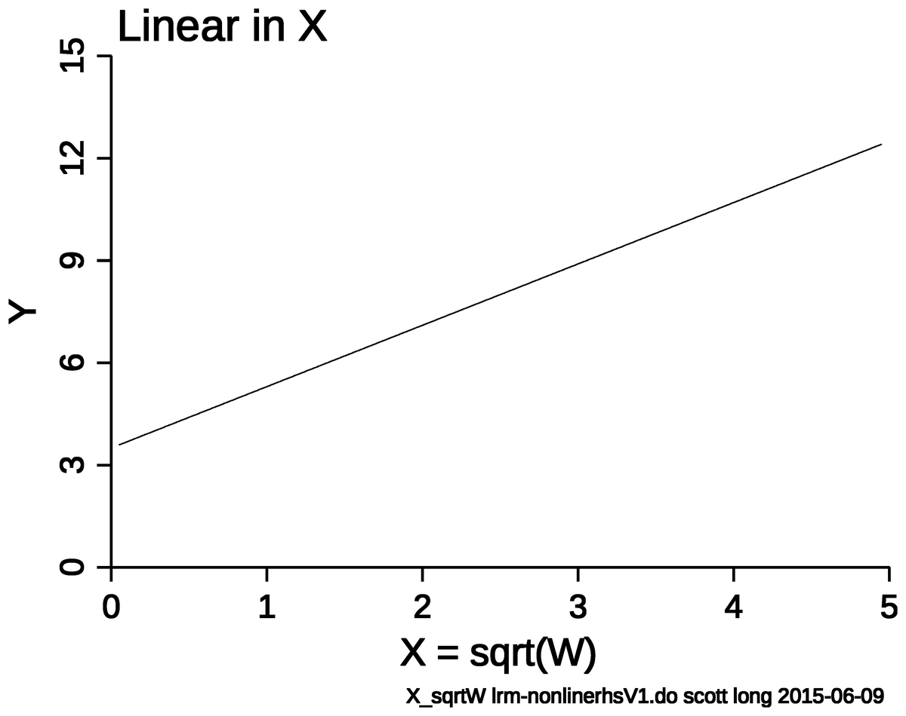
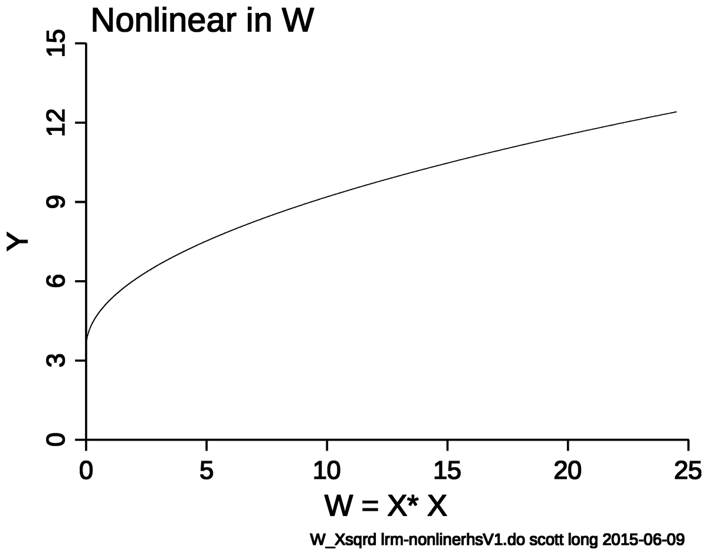

Note the bolded \(\mathbf{x}\) and the bolded \(\boldsymbol{\beta}\) (beta) above is notation to denote a matrix (in this case vectors [which is a matrix with only one row or column])
This allows for compact notation to refer to many IVs (\(\mathbf{x}\)) and many associated coefficients (\(\boldsymbol{\beta}\))
The x’s have subscript i’s to denote they vary across each observation in the data
The \(\beta\)’s do not have subscripts because there is only one for each variable
ε is unexplained variation
\(\varepsilon\) (epsilon) represents variation that is not explained by the IVs (\(\mathbf{x}\))
Often called the “error term” (or “disturbance”)
No health or social science model is likely to explain anywhere close to 100% of the variation in the DV so there will be some unexplained variation
Unexplained variation may be due to:
Randomness
Measurement error
Unobserved heterogeneity
Some sources of error were measured but not included in your model; some sources of error are unmeasurable; etc.
For any given observation we can calculate a prediction error—also called the residual for that observation (often denoted as \(e_{i}\) rather than \(\varepsilon_{i}\) to distinguish it from the error which is a theoretical deviation from the true value rather than the observed value)—by comparing their observed value of the DV (\(y_{i}\)) to what our model predicts (\(\widehat{y}\)) [note a “\(\widehat{hat}\)” denotes a predicted value]
For example, if the R2 from a model regressing wages (DV) on gender (IV) is 0.05 this indicates that gender explains 5% of the variation in wages
Assumptions of the model
Linearity
Not perfect collinearity
E(ε|x) = 0
Homoscedastic errors
Uncorrelated errors
Normally distributed errors*

*You will commonly hear people refer to an additional—but incorrect—assumption of the model: that variables (especially the DV) must be normally distributed. This does not have to be the case, and linear regression estimates tend to be quite robust even with highly non-normal data. See Lumley et al. 2002
A unit change in w1 does not have a constant effect on y


Homoscedastic errors
Across all values of your IV (\(\mathbf{x}\)) you have the same variance for ε
\[Var(\varepsilon_{i}\,|\,\mathbf{x}_{i}) = \sigma^{2} \text{ for all } i \;\; (\sigma^{2} \text{ has no subscript } i)\]
Can you think of when this would not be the case?
E.g., Where for some values of your IV your model predicts well (leading to a small variance of the errors at those values) but does not predict well at other values (leading to a large variance of the errors at those values)?
Errors are uncorrelated
Knowing the residual for one observation does not provide any systematic information about the residual of another observation
Can you think of a situation where this would not be the case?
E.g., Where knowing how well the model predicts for one case, is associated with how well it predicts for other similar (or dissimilar) cases?
Normally distributed errors
The errors from your model should be approximately normally distributed for accurate significance testing
But, deviations from normality are common and usually do not cause major issues, especially with large datasets (Lumley et al. 2002)
Collinearity
We use multiple regression since the variables in \(\mathbf{x}\) are correlated (collinear)
The variables in \(\mathbf{x}\) cannot be perfectly collinear
Rarely the case unless by mistake (e.g., income in $ and income in €)
Collinearity is rarely an issue for overall model inference or fit; can make interpretations of specific IVs problematic
If two IVs are explaining the same source of variation in the DV it can be difficult to isolate the effects of each
Can lead to puzzling situations such as when both IVs are non-significant in the model despite overall model fit increasing markedly when both variables are added to the model
Possible solutions:
Include only one or the other variable in the model
The most common way to assess multicollinearity is to calculate variance inflation factors (VIFs)
Estimate a separate linear regression for each IV x where the IV is used as the dependent variable and all other IVs are used as predictors
Use the R2 from that model to calculate the VIF for that IV
\[VIF = \frac{1}{1 - R^{2}}\]
No hard and fast rules for what VIF value is problematic
“The VIF has a lower bound of 1 but no upper bound. Authorities differ on how high the VIF has to be to constitute a problem. Personally, I tend to get concerned when a VIF is greater than 2.50, which corresponds to an R2 of .60 with the other variables.” (Allison 2012)